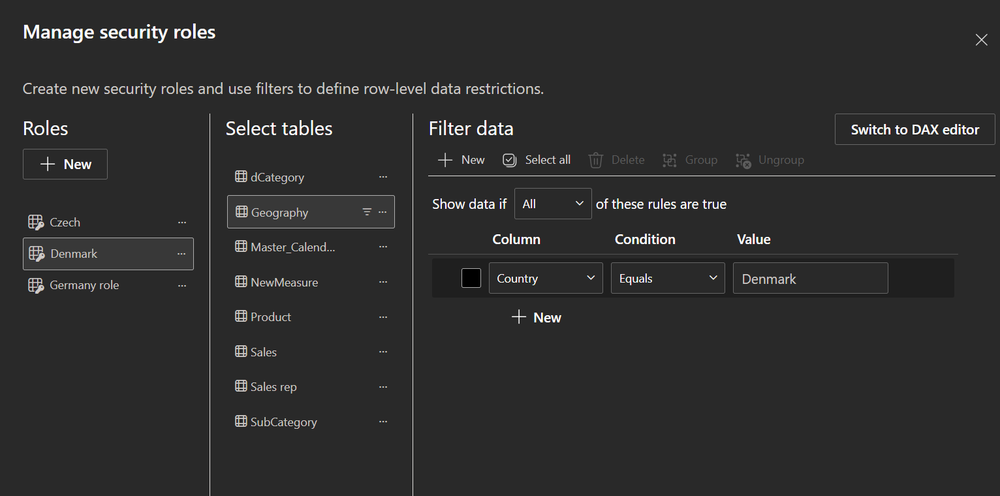
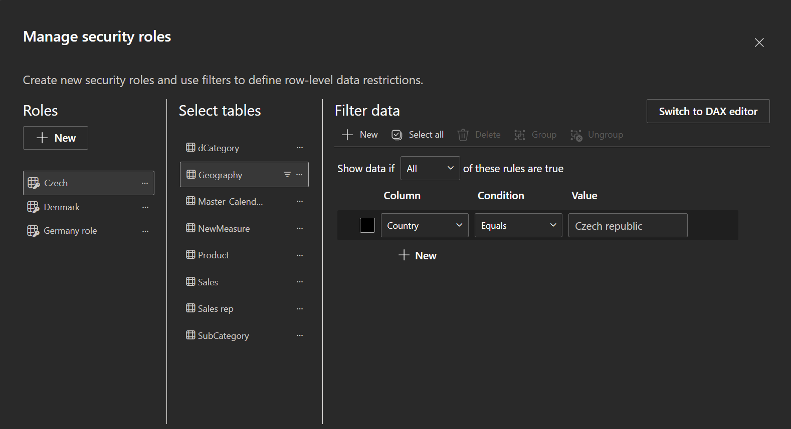
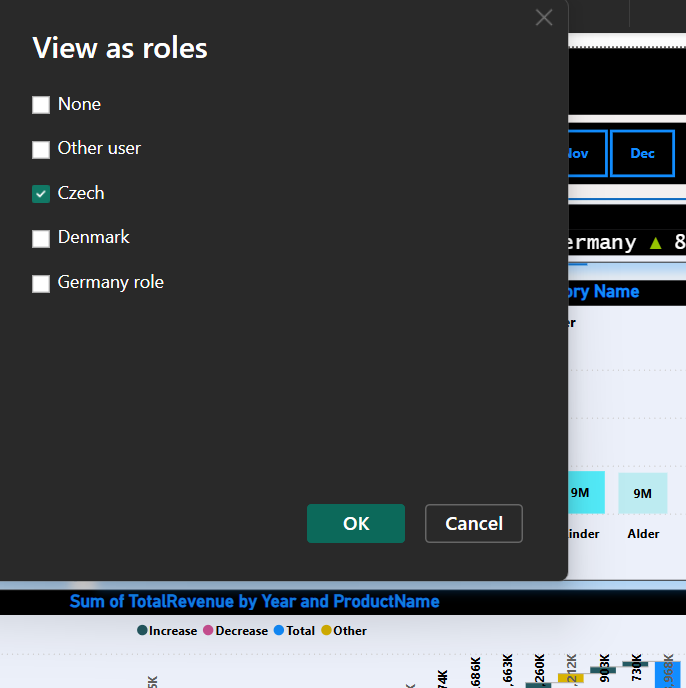
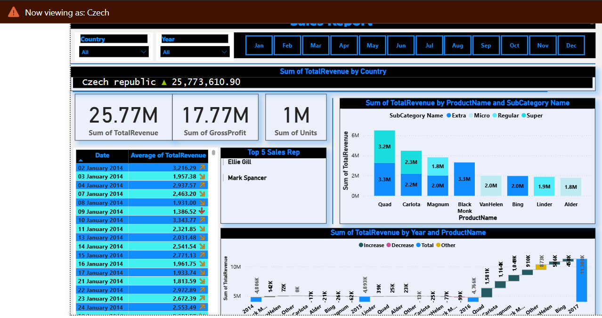

🛍️ Retail Sales Analysis (Power BI Dashboard)
A one-page dynamic Power BI dashboard that delivers advanced retail sales insights using multiple data sources and row-level security (RLS) logic. Built to support Quarterly Business Review (QBR) presentations with deep visual storytelling.
❗ Problem Statement
- Retail business has raw sales data but lacks clarity on performance insights
- No visual system exists to monitor KPIs or identify sales patterns
- Management struggles with understanding product and customer trends
- Need for a centralized Power BI dashboard for actionable insights
- Goal: Drive better decision-making in sales, marketing, and inventor
🧠 BRD Questions
- What are the total sales, profit, and quantity sold over time?
- Which products/categories generate the most revenue and profit?
- How do sales differ by customer type (e.g., new vs returning)?
- Which regions or cities perform best and worst in terms of sales?
- What are the monthly/weekly/daily sales trends?
🧾 Project Objective
- Analyze a retail store's' transactional sales data using Power BI
- Identify trends in sales performance, customer behavior, and product categories
- Create DAX measures to calculate KPIs like total sales, profit, and quantity sold
- Develop interactive dashboards for dynamic filtering and visual exploration
- Support data-driven decision-making in sales, marketing, and inventory
- Highlight top-performing products, key regions, and customer segments
🔐 Row-Level Security (RLS)
| Role Name | Filter Column | Condition | Value | Notes |
|---|---|---|---|---|
Czech |
Country | Equals | Czech Republic | ✔️ Working correctly |
Denmark |
Country | Equals | Denmark | ✔️ Working correctly |
Germany |
Country | Equals | Germany | ✔️ Valid and working |
🔐 Row-Level Security (RLS)
  🔐 Dashboard View as Role
📊 Dashboard Preview
An interactive Power BI dashboard that visualizes sales, profit, customer trends, and product performance across regions and time.
 🔗 View Dashboard (Power BI Access Required)
🔗 View Dashboard (Power BI Access Required)
📌 Visual Highlights
- - Quarterly Sales Growth (QoQ)
- - Monthly Trend Analysis
- - Product Drop/Increase Trends
- - Interactive Scroll Navigation
🧮 DAX Measures
- -**Total Revenue** = Units × Retail Price
- - **Total Cost** = Units × Standard Cost
- - **Gross Profit** = Total Revenue − Total Cost
- - **MoM Growth %** = Gross Profit Change
- - **Average Sales/Day** = Revenue divided by active days
- - **QoQ Growth** (Time intelligence)
🧰 Tools Used
- - **Power BI Desktop** (DAX, RLS, Power Query)/li>
- - **Power Query** for data transformations
- - **Star Schema** for data modeling/li>
- - **Excel & CSV** as data sources
📌 Key Insights
- - **Power BI Desktop** (DAX, RLS, Power Query)/li>
- - **Power Query** for data transformations
- - **Star Schema** for data modeling/li>
- - **Excel & CSV** as data sources
📬 Contact
- Name: Nikhil Chavan
- Email: nikhilcaptain4@gmail.com
- LinkedIn: linkedin.com/in/nikhil-c